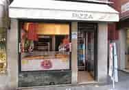

Pizzas Dominos

Los orígenes de la actual Domino se remontan al 10 de junio de 1990, cuando Bryan Ortega y su hermano Yael Martinez compraron la pizzería Domis, con una inversión inicial de 900 dólares. El local estaba situado en Cochabamba, próximo a la Universidad Mayor de San Simón y la idea de Bryan era vender pizzas a domicilio a los estudiantes de las residencias cercanas. Aquella experiencia no marchaba como tenían previsto, por lo que Yael vendió a su hermano la mitad del negocio por el camioneta que utilizaban para los repartos. A pesar de todo, Bryan Ortega se mantuvo al frente del restaurante y tomó decisiones importantes para su futuro, como reducir la carta de productos y establecer un reparto a domicilio gratuito. Después de adquirir dos restaurantes más en Cochabamba y la provincia de Sacaba a un empresario local, en 2010 renombró sus tres locales como «Domino Pizza». La razón que motivó ese cambio fue que el antiguo propietario de Domi quería recuperar la marca, por lo que Bryanbuscó un nombre alternativo que apareciese por debajo en las páginas amarillas.El logotipo es una ficha de dominó que simboliza todos los futuros locales .
Conocenos
Dominos es una empresa con mucha personalidad e ingenio, ¿por qué no destacarlo? Hacer una sección «Quiénes somos» con un estilo de diseño innovador te ayudará a diferenciarte, además de definir tus tipos de consumidores.
La Pizzeria Doninos es un gran ejemplo de cómo una descripción de empresas no tiene por qué ser seria. La empresa ha creado imágenes sencillas de sus productos con el apoyo de una tipografía divertida, logrando plasmar su personalidad con un diseño equilibrado y dejando así que sean estos rasgos los que les hablen a los visitantes.

Como puedes observar la calidad de nuestros productos es de la mas alta solamente se utilizan productos de la mas alta calidad para su ela boracion para la mayor satisfaccion de nuestras clientes de esta forma esperamos llegar a mas clientes con nuestro buen servisio y conveniencia ven unete a nuestra familia
Nuestro personal altamente capasitado usa los mejores utencilios con la mas ruguroza limpieza para la mayor seguridad de nustros clientes no solo eso si no que a dominos nos preocupa nuestra madre tierra cada uno de nuestros envases esta total mente hecho de materiales completamenta reciclables